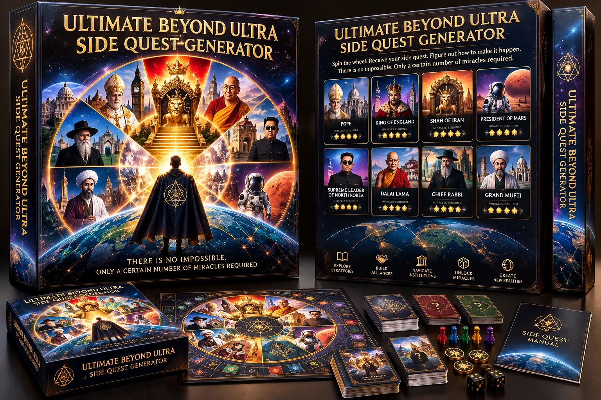

A Miracle Engineering game · Win-Win-Win
Shah of Iran
There is no impossible. There is only the number of miracles required.
We win when we all win.

Concept art for the box. The physical game does not exist yet.
What it is
Pick an impossible goal. Find the fewest miracles.
You spin for a goal that sounds absurd: become Shah of Iran, become Pope, become President of Mars. You break it into miracles: unlikely steps that could each actually happen. Then you look for the path that needs the fewest.
That search is Miracle Engineering. An impossible goal is only a goal that needs more miracles than you have found a way around yet.
How it happened
Three things came together
Most games need a loser. This one is built so that nobody has to lose for you to win, and the best endings need everyone.
Imagination is something you can practise and build with. In the game you don't ask whether a goal is possible. You ask how many miracles it takes.
Mars did not know how to become the Shah of Iran. But he could become the first page on Google for it, if not the first result overall. No throne needed.
That last move is called a Reframe: you win by changing what the words mean. This page is one. If you got here by searching for the Shah of Iran, the trick worked.
The main quest
Unify humanity as the Ambassador of Peace
Eight names everyone on Earth has heard of. Bring each one on board and humanity is unified. Each one is a miracle.
- MrBeast
- Cristiano Ronaldo
- Lionel Messi
- The Dalai Lama
- Elon Musk
- The Pope
- Donald Trump
- Kim Jong Un
One miracle is a table-top peace. Four is a win. All eight is peace. Fewer miracles for the same result is better engineering.
Before you play
It is messy on purpose
The game teaches three things: how to cooperate, how to stretch your imagination, and how to treat the impossible as normal.
- Some side quests are public. Some are hidden.
- Some side quests contradict each other.
- New dependencies turn up as you go.
- Sometimes the rules change.
- Sometimes a new ability turns out to be a limit.
- Nobody knows who is winning.
It is unpredictable and chaotic. That is the practice: learning to thrive in a complex world with many centres of power.
Satire and thought experiment. Nobody named here is affiliated with this game or has endorsed it. The prototype is an early playtest draft.